Note
Hello, welcome to the SunFounder Raspberry Pi & Arduino & ESP32 Enthusiasts Community on Facebook! Dive deeper into Raspberry Pi, Arduino, and ESP32 with fellow enthusiasts.
Why Join?
Expert Support: Solve real-life coding problems and technical challenges with our community and team.
Learn & Share: Exchange tips and tutorials to enhance your skills.
Exclusive Previews: Get early access to new product announcements and sneak peeks.
Festive Promotions and Giveaways: Take part in giveaways and holiday promotions.
👉 Ready to explore and create with us? Click [here] and join today!
Get Started with Bluetooth
The ESPC2-01 gives you Wi-Fi and Bluetooth in the same module, so the kit needs no second Bluetooth chip. The Bluetooth projects use exactly the module you already have.
In the Wi-Fi projects the board talked to Blynk through the cloud. Here the phone talks to the module directly - no router, no internet, no account. That is what makes Bluetooth so useful for a remote control or a small display.
By the end of this chapter you will have:
The module advertising itself as SunFounder-C2,
Text typed on the phone arriving on the board, and
Text typed on the board appearing on the phone.
1. Connect the Module
Wire the module to the R4 Minima the same way as in the Wi-Fi projects: 5V, GND, TX, RX - four wires, nothing else.
Note
The module draws a high current at start-up, so make sure the 9 V battery or an external power supply is plugged into the DC jack of the R4 Minima.

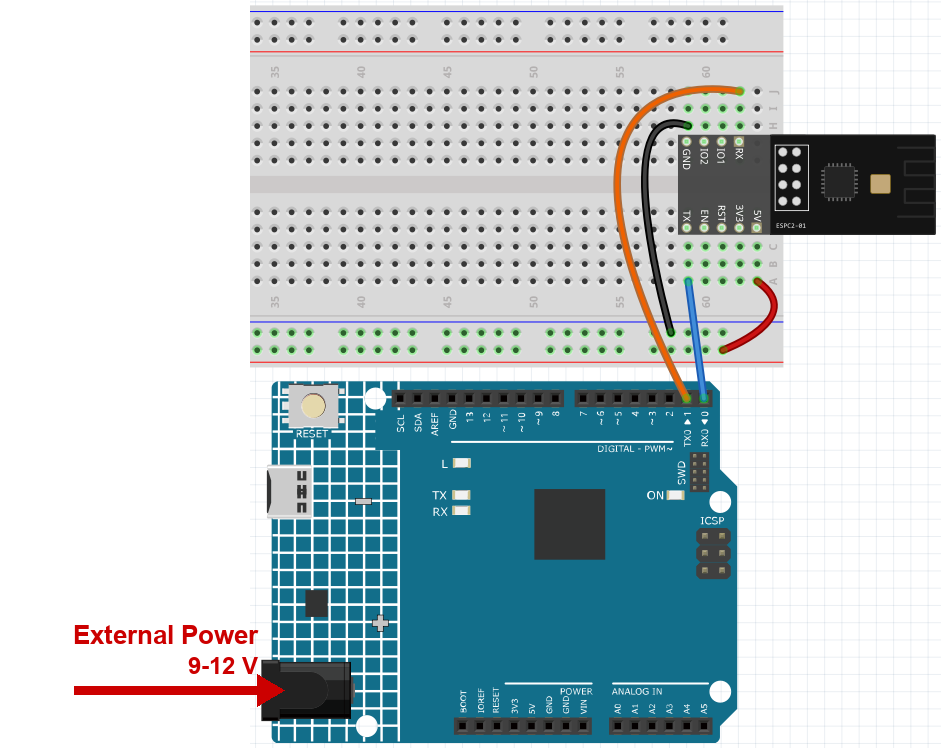
2. Upload the Sketch
Open
00-Bluetooth_start.inounder the path ofultimate-sensor-kit\code\iot_project_espc201\bluetooth\00-Bluetooth_start.Select Arduino UNO R4 Minima and the right port, then click Upload.
The sketch does three things:
It includes
SunFounder_BLE.h, a small wrapper around the module’s Bluetooth commands - this is why the rest of the code only needsbleSerial.print()andbleSerial.read();At start-up the wrapper switches Bluetooth on, sets the name to SunFounder-C2 and starts advertising, so a phone can find it;
After that the sketch simply passes text in both directions.
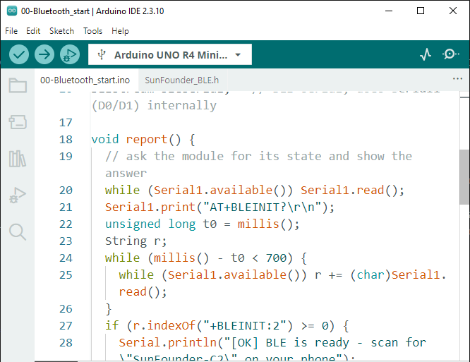
Open the Serial Monitor at 115200. You should read:
=== ESPC2-01 Bluetooth (BLE) === [OK] BLE is ready - scan for "SunFounder-C2" on your phone -------------------------------- Type here and press Enter: the text is sent to the phone (C305)
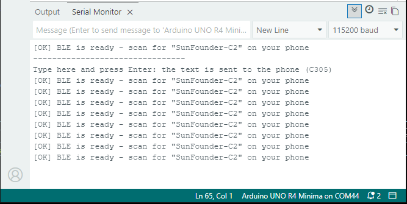
If you read
[!] no reply from the moduleinstead, the module is not answering on D0/D1 - check the four wires and the power supply, then press the reset button on the board.


3. Find the Module with Your Phone
Install LightBlue on your phone - it is free on iOS and Android. Any Bluetooth scanner works, but the screens below use LightBlue.
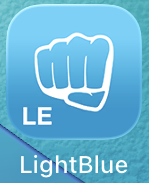
Open LightBlue and tap Scan. The module appears as SunFounder-C2.
Note
The name comes from the sketch. If you change it there, the new name is what appears on the phone - handy when several kits are in the same room.
Warning
Do not pair the module in the Bluetooth settings of the phone. This is BLE, so there is nothing to pair: LightBlue opens the connection itself. If you tap SunFounder-C2 under Settings > Bluetooth, Android or iOS starts the older pairing procedure and asks for a PIN code - and the module has no code to give, so the box can never be filled in correctly.
If you already tried: open Settings > Bluetooth, choose Forget this device (or Unpair), switch Bluetooth off and on again, then connect from LightBlue.
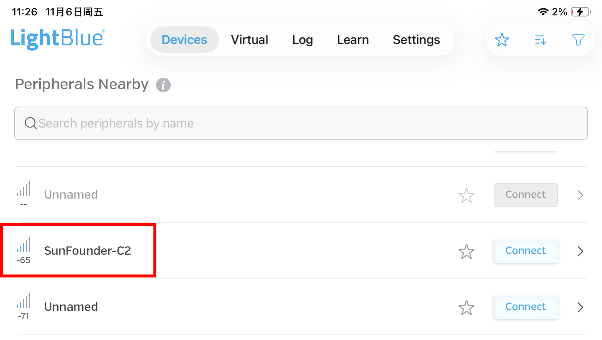
Tap SunFounder-C2 to connect. The service list opens.
Expand the service 0xA002. It holds the characteristics C300 to C307. The three used in this chapter are:
Characteristic
Direction
What it is for
C304
phone -> board
the phone writes text here and the board reads it
C305
board -> phone
the board pushes text here; the phone has to Subscribe first
C300
board -> phone
one stored value the phone can Read at any time
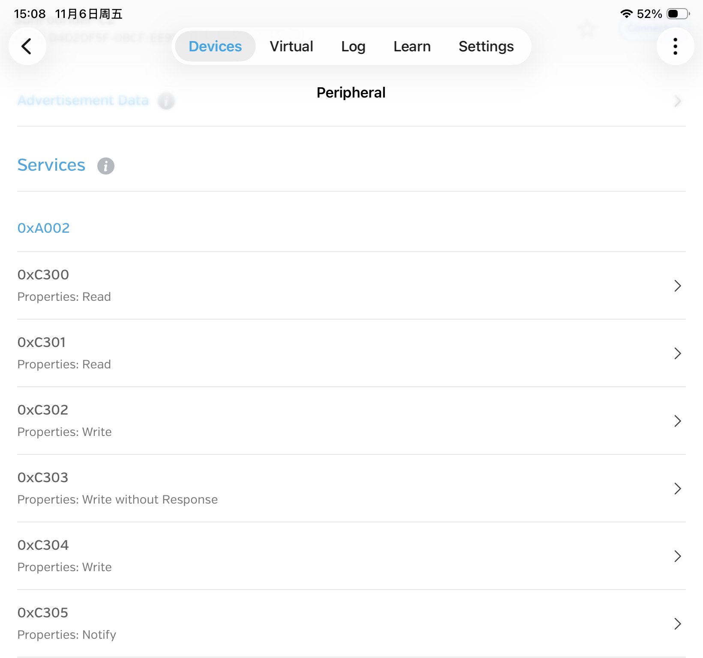


4. Send Text from the Phone to the Board
Open 0xC304 and tap Write new value.
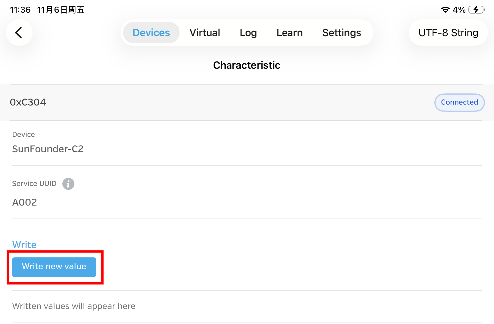
Change the format - the button in the top right corner - to UTF-8 String, then type a word, for example
hello.Note
This step is easy to forget. In the default hex format the board receives the numbers
68 65 6C 6C 6Finstead of the wordhello.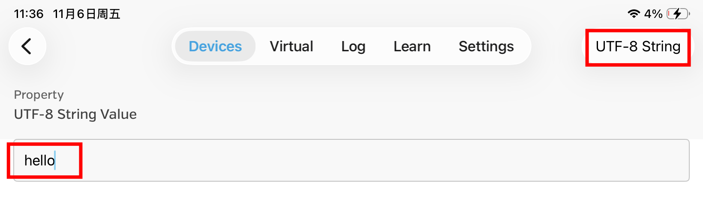
Look at the Serial Monitor: your text appears there, and the board sends it straight back so you can see that the link works both ways.
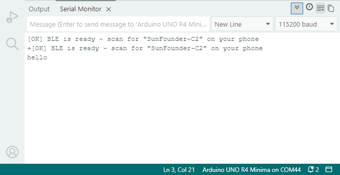


5. Send Text from the Board to the Phone
Open 0xC305 and tap Subscribe.
Subscribe means “keep this open and show me everything that arrives”. Without it the phone silently drops anything the board sends.
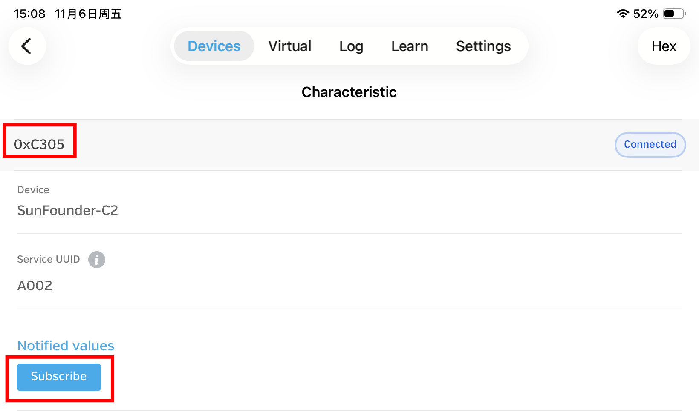
In the Serial Monitor, type a word and press Enter. The sketch forwards it to C305, so it shows up in LightBlue.
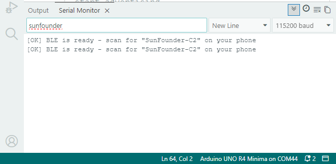
If you see hex numbers in LightBlue instead of your text, set the format in the top right corner to UTF-8 String - the same setting as in step 4.
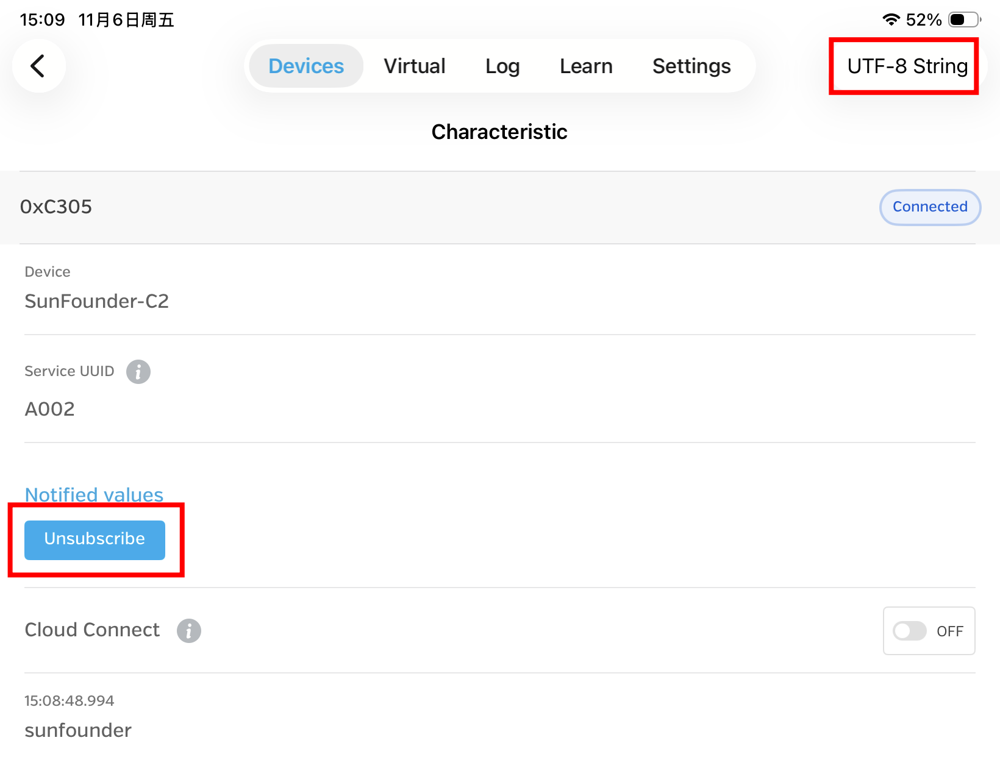


6. What You Just Learned
Write (C304) - the phone sends data to the board.
Subscribe (C305) - the board sends data to the phone, and the phone listens.
Read (C300) - the phone asks for a value whenever it likes.
The next chapters use exactly these three, only the text and the hardware change: an LCD that shows what you type, a lock that opens, an RGB lamp that changes colour.